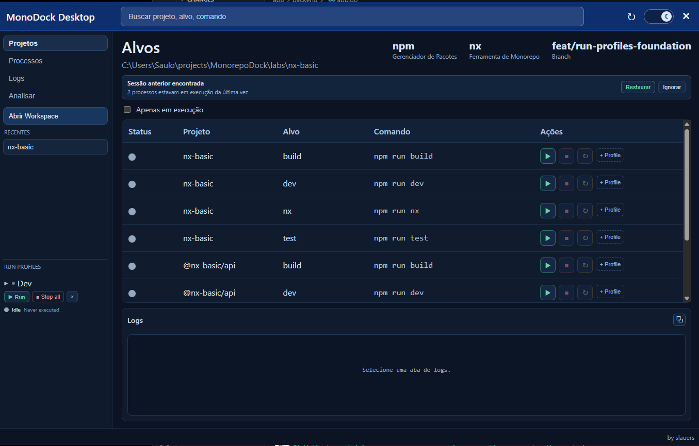
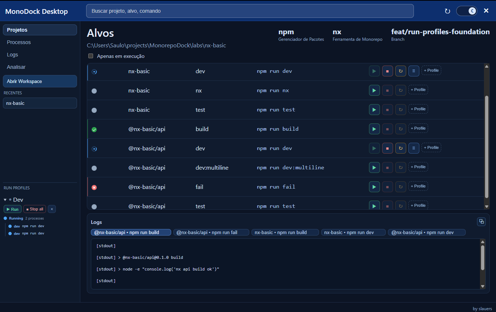

MonoDock gives your workspace a visual runtime. Run targets, organize processes, inspect logs, restore sessions, and manage workflows without drowning in terminal tabs and shell scripts.

Most monorepo workflows become a collection of shell history, terminal tabs, sticky notes, and emotional damage. MonoDock centralizes the runtime layer into one desktop experience.
Execute workspace targets without memorizing commands or juggling terminal windows.
Start, stop, restart, and inspect processes from a unified runtime view.
Group multiple targets into reusable runtime profiles like dev environments, workers, or test stacks.
Stream logs in real time with process tabs, status indicators, and copy support.
Recover previous running sessions after reopening the app, because developers deserve rights too.
Inspect vulnerabilities, dependency inconsistencies, and hoist opportunities visually.
MonoDock keeps processes, profiles, logs, and runtime states visible in one place, so your workspace stops behaving like a haunted terminal multiplexer.

MonoDock is intentionally focused. The goal is not to become another overloaded IDE. It exists to make monorepo runtime management faster, clearer, and less annoying.
Processes should be observable without requiring six terminal panes and a memory palace.
Start environments quickly without rebuilding your shell history every morning.
Fewer layers. Faster actions. Less “where the hell is that option”.
Free and open source. Built with Wails, Go, React, TypeScript, and an unreasonable amount of “this should probably be a real product”.